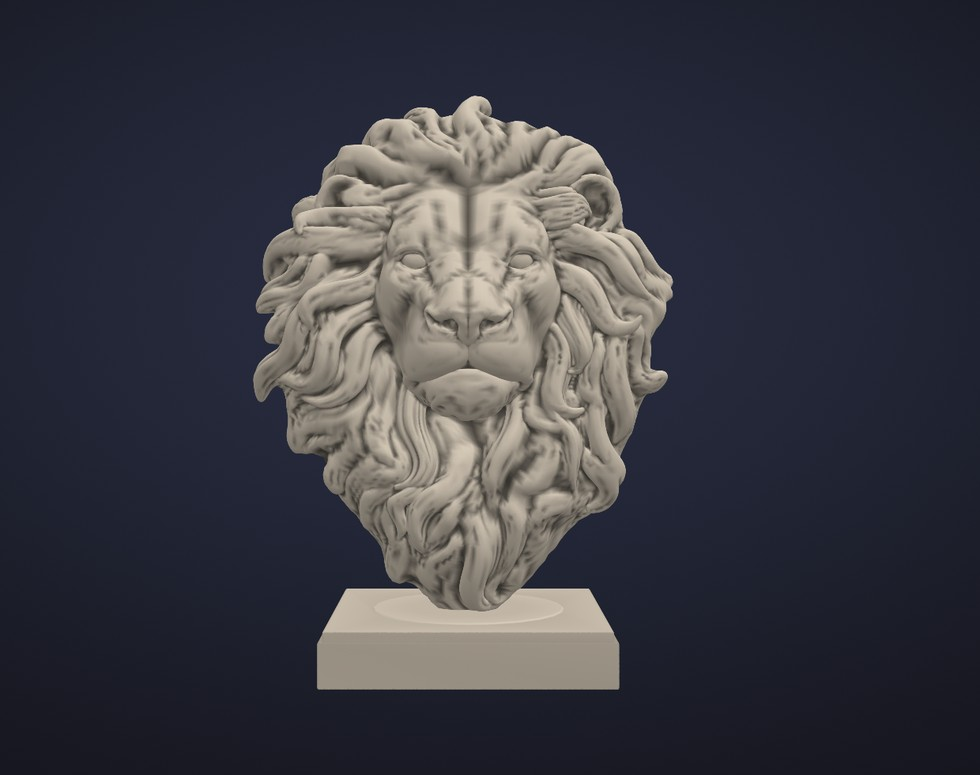
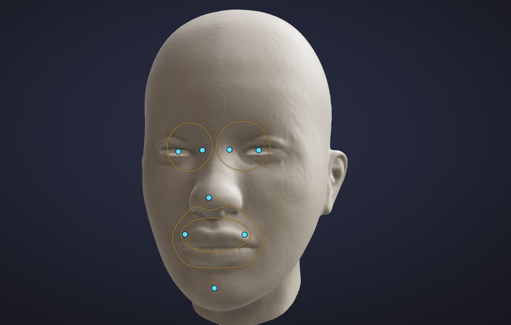
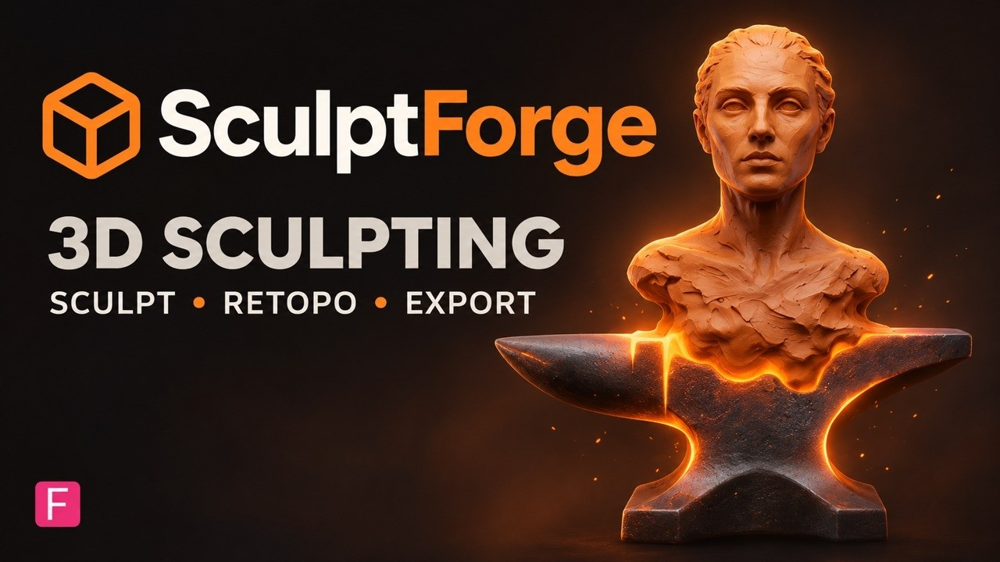
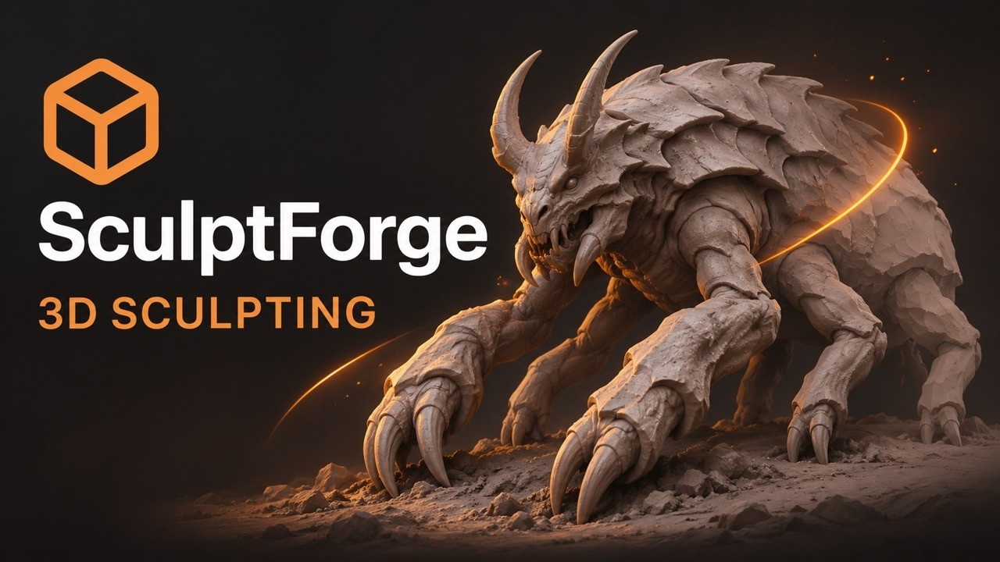
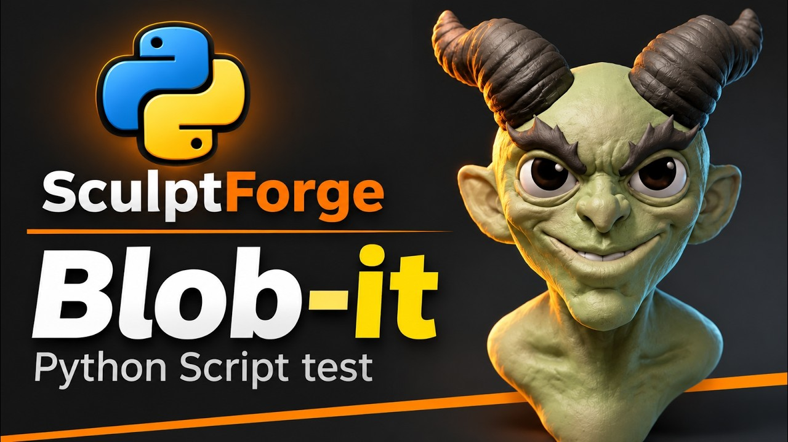

Micro levels, Monochrome new in 0.14.4
- Both sides shade live
- Monochrome everywhere
The free, open-source sculpting app
SculptForge on Android: free for everyone. An early test build for tablets, phones and Chromebooks →
Built by Artists, for Artists.
Free, open-source sculpting for Windows, macOS, Linux and Android. No account, no subscription.
Free for everyone. Android is an early test build.
New in 0.14
Pick Points, Edges or Faces, then Extrude, Inset, Bevel, Edge loops and Span. Then sculpt on it.
In the Tool panel on the right (not the Library's Tool tab): Polygon > Polygon mode.
Read the Polygon mode guideEverything that changed · changelog
SculptForge on Android as a free early build, HDRIs of your own, a Clean view, Monochrome colours and Focus Detail on Windows.
Dynamic keeps your painted texture, pinching cuts hold smooth walls, and dense Micro levels shade closer behind the brush.
What you get
Each of these ships today and has a chapter in the guide.

Gaussian splatsSend a splat from Blender, sculpt over it, and send the splats back to the same object.
Capture to sculptable meshOne click turns a splat capture into clean quads with its colours.Free and open source (GPL v3) on Linux, macOS, Windows and Android. A new version every few days →
Prefer no AI? Switch every AI feature off in Preferences > AI. About the AI tools
From the community
With SculptForge I am immediately at home with the basic UI. It was actually fun to use rather than a chore to learn it.
After years of struggling with expensive software subscriptions, finding SculptForge felt like a breath of fresh air. It is evolving fast, with new improvements arriving regularly, and I genuinely believe it has a bright future. What excites me most is how it is made: artists steering and agents building is a monumental change in how software gets developed. My advice as a Senior Lead Character & Creature Artist and mentor: don't chase millions of polygons. Plan your models, build your forms intelligently, and add detail when needed. I strongly recommend every artist give it a try.
I'm primarily focused on digital sculpting and using SculptForge for my workflow as a multimedia freelancer. I was really happy to find software that lets me get into my creative flow. And boy does it handle the polygon counts.
I've had a long-standing interest in sculpting various human faces. My goal is to block out the primary forms in Blender, send the base mesh or Shape Keys to SculptForge to sculpt fine forms and surface textures, and then complete the piece.
Blender to SculptForge for fine detail
Any open source program is a win in my book. So when I saw this and the membership for a reasonable price to support, I jumped on it. I really want to see a program that is not driven by subscriptions with very little return year after year.
I'm a product designer by education, but I've been 3D modelling for more than a decade and sculpting for about 5 years now. I mostly sculpt characters and assets for my own game projects.
I'm really happy to be part of the SculptForge community. I'm genuinely impressed by what the team is building, and I really appreciate the effort and dedication that goes into developing such a powerful sculpting application. I have high hopes for SculptForge, and I'm excited to see how it continues to grow and evolve!
I mainly create characters, creatures, and various 3D models. I'm particularly interested in its sculpting capabilities, Quad Remesh, and integration with AI tools. Features such as face extrusion, inset, bevel, edge loops, and bridge operations would make SculptForge even more powerful.
I like how powerful SculptForge is already.
I work in the film industry during the day and at night I'm designing robots using a variety of digital design tools, then 3d printing and mechanizing them for my businesses. I also produce a lot of personal creatures and organic designs for 3D printing.
Watch
An independent artist walks through SculptForge.
Community videos
Walkthroughs and experiments from artists using SculptForge. A video loads from YouTube only when you press play.

An illustrated walkthrough of SculptForge, from high-resolution sculpting to engine-ready assets.
Still true: the benchmark figures are our own measurements. Raw outputs are on the benchmarks page.

An illustrated overview of sculpting, painting, AI creation and the Blender bridge in SculptForge.

A screen recording of the Blob-It Python script building a head in SculptForge.
Members and community
SculptForge is free for everyone, open source and built in the open. Members help decide what comes next.
Artist work
VFX Reference Platform CY2026 · CY2027
Built for VFX and animation pipelines: VFX Reference Platform builds in every release, OpenUSD in and out, a Python API, a headless CLI and Send to Unreal.
Why we build this
No machine will ever replace your genius, your talent and your taste. So SculptForge is free, open source and on Windows, macOS, Linux and Android, and it is built in the open with the people who use it.
Every AI feature is optional, runs only when you use it and can be turned off in Preferences > AI. SculptForge has no servers, no account and no telemetry.
Version 0.14.4. All builds come from the latest GitHub release, with SHA-256 checksums. Free forever; membership adds early builds (from SculptForge 2027, each release about two weeks early), plus Member Requests, a roadmap vote and credits.
makepkg -si
Android: early test buildFree for everyone · Android 9+ · tablets, phones & Chromebooks · .apk on the release page
VFX Reference PlatformCY2026 (Rocky 8) & CY2027 (Rocky 9) · .tar.gz with Python module
Rezpackaging/rez · build and install your own package
Each button downloads the newest version.
All downloads
(ARM64, one-command install) · on macOS also
brew install --cask islandmed/tap/sculptforge ·
older versions.
The interface speaks English, Español, 繁體中文, 简体中文 and 日本語 (Edit > Preferences > Interface > Language; it starts in your computer's language when SculptForge has it). 日本語のはじめ方.
Android is an early test build, free for everyone and not in an app store. Members get its builds first.
arm64-v8a for most phones and tablets, x86_64 for Chromebooks with Intel or AMD; check it against SHA256SUMS-android.txtPackage managers: Homebrew is live; winget and Omarchy are in review; the AUR package is ready but not published yet; apt and dnf repositories are being built. Status: Install guide.
The builds aren't code-signed yet. Windows code signing via SignPath Foundation is being set up (Code signing policy). On macOS, right-click the app and choose Open the first time. On Windows, if SmartScreen appears, choose More info → Run anyway. You can also build from source.
Yes. SculptForge is free under the GPL-3.0, and you own everything you sculpt with it. The GPL covers the program's source code, not your models. If you use an AI model to generate a starting point, that model's licence also applies (see the AI services guide).
No. Sculpting, layers, LODs, remeshing, file formats and Send to Unreal all work offline with no AI at all. The AI tools are extras you can switch to a local model or simply ignore.
It targets Unreal Engine 5. It uses Unreal's built-in Python remote execution, so you only enable the Python plugin and tick "Enable Remote Execution"; there's nothing to install in your project. You can always export an Unreal-ready FBX instead.
Mostly, yes. Pick Classic sculpting keys at the first start and bring models over as OBJ, FBX, glTF or USD, or through the Bridge.
Already in, with familiar brushes and controls:
Yes. Every release includes VFX Reference Platform CY2026 and CY2027 builds (Rocky Linux 8 and 9, GCC
14.2, Python 3.13), there's a Rez package, and everything the app does can be scripted from Python or the
headless CLI. It reads and writes OpenUSD (USDA/USDZ), FBX and glTF. Binary .usdc, USD
references and OpenColorIO aren't supported yet. See the
studio guide.
Try it, report bugs, share brushes, and send pull requests. See CONTRIBUTING.md.